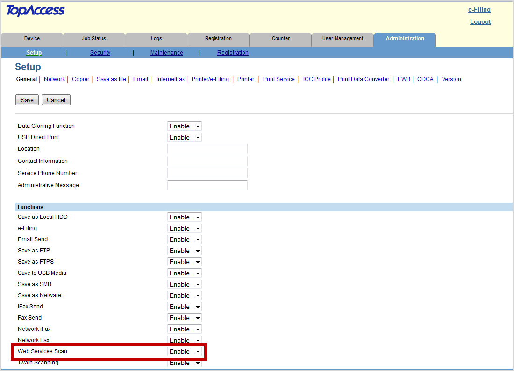
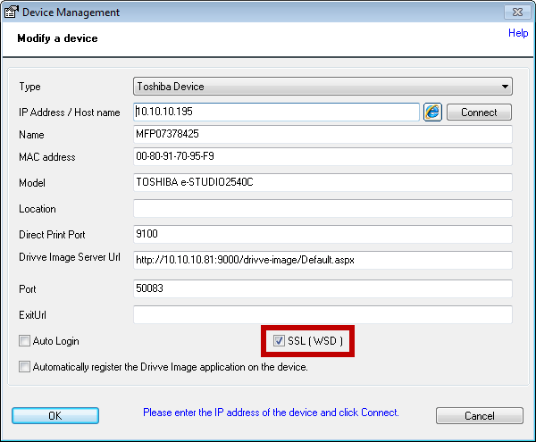

Watchdoc ScanCare - Install and configure on a Toshiba device
Principle
Sometimes the automatic installation of Watchdoc ScanCare on a Toshiba device fails. In this case, a manual installation is required.
Prerequisites
To manually register Watchdoc® ScanCare on a Toshiba device, the following conditions must be met:
-
the printing device must have already been registered via the Watchdoc ScanCare configuration interface.
-
The printing device must have a Watchdoc ScanCare licence.
-
The Toshiba Embedded Web Browser (EWB) module must be enabled on the print device (this module is dependent on the "External Interface Enabler" option (Code: GS-1020) which is available in some markets and should be checked with Toshiba representatives).
-
Ports:
-
port 9000: default port for Watchdoc ScanCare;
-
the port actually used can be different from the default port 9000. Verify the port used in the configuration of your server.
-
Procedure
Activate the Web Scan service
-
from a Web browser, enter the IP address of the Toshiba device.
-
in the Toshiba device administration page, displayed, log in as administrator.
-
Select the Administration tab and click Setup, then click General.
-
in the Function section, In the drop-down list Web Services Scan, select Enable.

-
Click the Save button.
Indicate the server address (for EWB devices only)
For a EWB device, follow the configuration:
-
In the Administration > Configuration tab, click on the EWB menu item;
-
In the Server registration settings section, enter the IP address of the ScanCare server using the following syntax: http://[server-IP-address]:[port]/Drivve-image (Example URL. For ScanCare server with the IP address192.168.1.1, the URL in the field Server Registration looks like this: http://192.168.1.1:9000/drivve-image).
-
In the area URL List for Menu Screen, click the Add button, then fill the following fields:
-
URL Name, enter the name to be displayed on the button of the Toshiba device display used to start ScanCare
-
URL field, enter the ScanCare URL (http://<server-IP-address>:<port>/drivve-image/default.aspx) and click the Save button.
-
-
Click the Save button to validate the add to the menu screen.
Add the ScanCare application icon (for EBX devices)
For EBX devices, continue with the configuration to define the ScanCare application access logo and the print device panel where to display it:
-
In a folder on the server, register the icon that represents the ScanCare application;
-
In the administration interface of the Toshiba device, under the Administration tab, click Registration > Image/Icon Management:
-
in the Image/Icon section of the panel, check the Current Image/Icon list to see if ScanCare appears;
-
If ScanCare does not appear, click the Choose File button and browse your workspace to select the ScanCare icon;

-
select the icon, then, when the file name appears in the interface, click the Import button
-
Check the list to see if your file name (ScanCare) is displayed in the Current Image/Icon List.
Add the ScanCare application in the device panel (for EBX devices)
-
In the Toshiba device administration interface, go back to the Registration tab and click Public Menu :
-
From any of the panels, select an undefined key, and then click Undefined ;
-
from the Select a host type interface, click Register from URL list:
-
in the Edit Settings box that appears, click Choose an icon from the gallery:
-
select the icon you want to associate with ScanCare, then click Save to confirm your choice.
-
In the panel interface, check the box to select the ScanCare application.
-
Click the Reset button.
-
Go to the Toshiba device and restart it.
To enable SSL in the ScanCare device management (available only for ScanCare version 5.1.586 and higher), proceed as follows:
-
Enable SSL on the device, and then in the ScanCare application management.
-
On the device's administration page, click Administration > Setup > Network > WS > Enable SSL/TLS.
-
In the ScanCare configuration programm, click the menu item Tools > Device Management.
-
Click the required device in the list Available devices, then click the Edit button.
-
Tick the checkbox SSL (WSD)
.
-
Click OK to close the dialog Device Management.